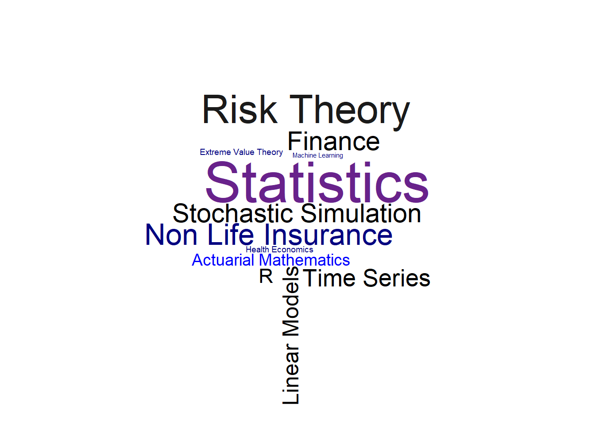

My Homepage
Boris Polanco
 \
\
Hi, I am Boris. I am a Blockchain Technology Engineer and Software Developer. I am looking for collaboration with companies and non-profit organizations for decentralized systems design. I also consider myself a Full Stack Developer since I love learning band end and front end frameworks. Additionally, I am motivated by cultural diversity and artistic solutions, specially for indigenous people. We want to develop IT solutions to help people that need it. My personal orientation is to be focused on the creation of software developing innovative project that incorporates the trends of future technology so we can build a better future together.
Hi, I am Boris Polanco, I am from Ecuador. I have studied applied mathematics during my bachelor studies at National Polytechnic School in Ecuador and I got a master degree in statistics at the University of Bern in Switzerland.\
In have created this website to publish some topics about my professional interest as statistics, actuarial mathematics, R programming, data visualization, also I want to share some of the knowledge that I have been adquiring during my short experience, as a student and in my job. If you have questions about my work, or everything related to me, do not hesitate in contact me.
I have added this link where you can find my CV as a pdf document. My Curriculum Vitae
My Interests
most of my professional interests can be seen in the next wordcloud. I did it using R. 